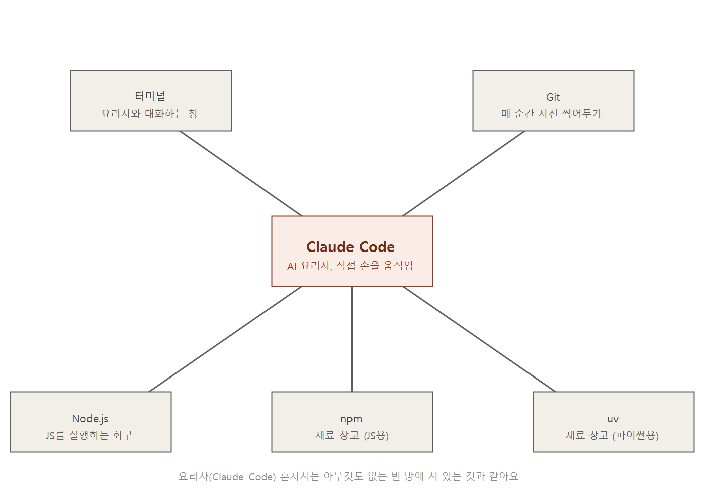
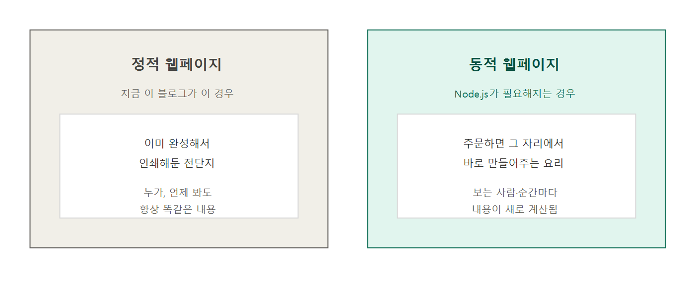
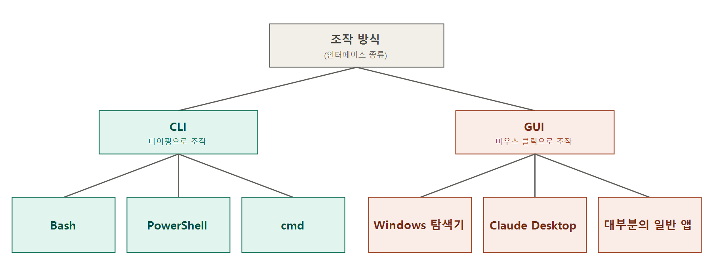
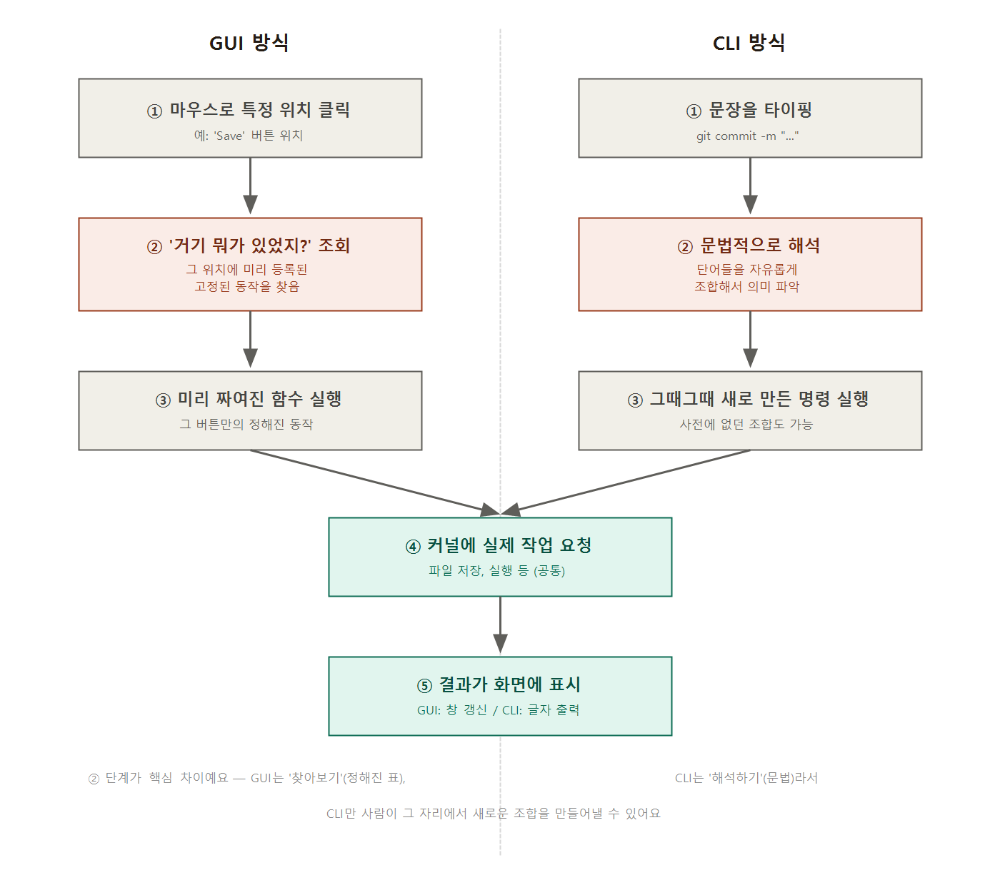

바이브 코딩으로 웹 만들기 (1) — Claude Code로 AI 코딩 개발 환경 세팅하기
2026. 7. 13.
저는 AI 에이전트 과정을 듣고 있어요. "바이브 코딩으로 웹 만들기"라는 시리즈의 첫 시간 제목이 "AI에게 일을 맡길 작업대를 차린다는 것"이었는데, 사실 제목부터 이해가 안 됐어요. "작업대"가 왜 필요한지, Claude Code·터미널·Node.js·npm·uv·Git이 왜 한꺼번에 나오는지 하나도 감이 안 왔거든요. 그래서 하루 종일 AI한테 하나씩 캐물으면서, 직접 설치하고, 에러 나고, 원인 찾고를 반복했어요. 이 글은 그 하루를 정리한 기록이에요.
왜 굳이 "작업대"를 차려야 하나
Claude Code는 말하자면 AI 요리사예요. 그런데 요리사가 아무리 실력이 좋아도, 빈 방에 혼자 서 있으면 요리를 할 수 없어요. 칼도, 화구도, 재료 창고도 있어야 진짜 요리가 나와요. 오늘 하는 "작업대 차리기"는 이 AI 요리사가 실제로 일할 수 있는 주방을 갖추는 거였어요.
일반 챗봇과 Claude Code의 차이도 여기서 나와요. 챗봇은 "이렇게 하면 됩니다"라고 레시피만 알려주는 사람이에요. Claude Code는 그 레시피를 듣고 실제로 주방에 서서 요리해주는 사람이에요. 웹서비스를 만들려면 "이렇게 하면 됩니다"라는 답변이 아니라, 진짜로 작동하는 파일이 있어야 하니까요. 이런 도구를 "에이전틱 코딩 도구"라고 부른다고 해요 — 말하면 실제로 손이 움직이는 도구라는 뜻이에요.
다섯 가지 도구, 하나의 그림으로
오늘의 작업대는 Claude Code, Node.js·npm, uv, Git, 터미널 이렇게 다섯 가지로 이루어져 있어요. 이걸 주방에 비유해서 그려봤어요.

- Claude Code = 요리사. 자연어로 지시하면 직접 파일을 만들고 고치는, 이 작업대의 메인 도구예요.
- Node.js = 화구. 자바스크립트 코드를 실제로 "돌려서" 작동하게 만들어주는 엔진이에요.
- npm = 자바스크립트용 재료 창고. 이미 누가 만들어둔 코드 조각을 갖다 쓰게 해줘요.
- uv = 파이썬용 재료 창고. npm이랑 똑같은 역할인데, 취급하는 언어만 파이썬이에요.
- Git = 요리 과정을 매번 사진 찍어두는 앨범. AI가 마음껏 고쳐도 예전 사진으로 되돌릴 수 있으니, 겁 없이 실험할 수 있어요.
- 터미널 = 요리사와 대화하고, 화구·창고가 잘 작동하는지 로그를 눈으로 보는 창이에요.
오늘 저는 이 다섯 개 중 네 개(Node.js, npm, uv, Git, 터미널 — 사실 Git은 원래 깔려 있었어요)를 실제로 설치하거나 직접 써보면서, "이게 왜 필요하지?"를 하나씩 몸으로 이해했어요.
자바스크립트는 왜 브라우저 "밖"으로 나와야 했나
Node.js를 이해하려면 먼저 "왜 자바스크립트가 브라우저 안에서만 살았는가"부터 알아야 했어요.
브라우저(크롬, 사파리 등)는 서버에서 HTML이라는 글자 텍스트를 받아와서, 그걸 눈에 보이는 화면으로 그려주는 프로그램이에요. 그런데 HTML/CSS만으로는 "이렇게 생겼다"까지만 표현할 수 있어요. "이런 상황이면 이렇게 해라"라는 판단은 표현할 방법이 없어요. 그래서 브라우저에 판단력을 주기 위해 만들어진 언어가 자바스크립트예요. 제 블로그의 언어 자동 감지 스크립트("한국어 브라우저면 한국어 페이지로 보내라")가 정확히 이 "판단"의 예시예요.
즉 자바스크립트는 원래 브라우저 안에만 살던 통역사였어요. 2009년 라이언 달이라는 사람이 이 통역사를 브라우저 밖으로 데리고 나와서, 혼자서도 일할 수 있게 독립시킨 게 Node.js예요. 그래서 지금은 터미널에서 node 파일이름.js라고 치면, 브라우저를 아예 열지 않고도 자바스크립트 코드를 실행시킬 수 있어요.

제 블로그가 지금까지 Node.js 없이도 잘 돌아갔던 이유가 여기 있었어요. 이미 완성된 HTML 파일을 그대로 보여주는 정적(static) 사이트라서, "그 자리에서 계산해서 보여줘야 하는" 일이 없었거든요. 반면 로그인한 사람 이름을 화면에 띄우는 것처럼, 방문자마다 다르게 계산해서 보여줘야 하는 동적(dynamic) 기능을 만들려면, 그 계산을 실제로 실행해줄 엔진(Node.js)이 필요해져요.
npm과 uv — 창고 이름이 다를 뿐, 하는 일은 같다
npm은 전 세계 개발자들이 이미 만들어서 올려놓은 코드 조각 수백만 개가 쌓여있는 온라인 창고예요. npm install이라는 명령어로 그 창고에서 원하는 코드를 내 컴퓨터로 갖다 쓸 수 있어요. 오늘 저는 npm install -g @anthropic-ai/claude-code, npm install -g opencode-ai를 쳐서 실제로 이 창고에서 완성품을 두 개 꺼내왔어요.
uv는 하는 일이 npm과 완전히 똑같아요, 다만 취급하는 언어가 파이썬이라는 것만 달라요. 한국어책만 있는 도서관과 영어책만 있는 도서관처럼, "창고"라는 개념은 같은데 언어 구역만 다른 거예요. 참고로 uv는 원래 파이썬 세계에서 쓰던 pip라는 오래된 창고를 대체하려고 나온 더 빠른 신상 창고예요 — pip는 재료 가져오기·작업실 만들기·버전 관리를 각각 다른 도구로 따로 했는데, uv는 이걸 하나로 통합했어요.
터미널 안에서는 무슨 일이 일어나는가 — 셸, 커널, 프롬프트
터미널을 열었을 때 보이는 그 까만 창 안에는, 사실 여러 층이 겹쳐 있었어요. 각 이름이 원래 어디서 왔는지부터 짚어보면 훨씬 쉬워요.
- 터미널(terminal): 원래 통신 회선의 "끝단, 종착지"를 뜻하는 말이었어요. 옛날엔 거대한 중앙 컴퓨터 한 대에 여러 사람이 각자의 키보드/화면 장치로 연결해서 썼는데, 그 "끝에 달린 장치"가 터미널이었어요. 지금은 그 장치를 화면 속에서 흉내 낸 창(PowerShell 창, Git Bash 창)을 터미널이라고 불러요.
- 셸(shell): "껍데기"라는 뜻이에요. 달걀 껍데기가 알맹이를 감싸듯, 셸이 컴퓨터의 핵심을 감싸고 있다는 비유예요. 사람이 타이핑한 글자를 해석해서 실제 명령으로 바꿔주는 통역사예요. PowerShell, Bash, cmd가 다 이 "통역사"의 서로 다른 이름이에요.
- 커널(kernel): "씨앗의 알맹이, 핵심"이라는 뜻이에요. CPU, 메모리, 파일 같은 컴퓨터 자원을 실제로 다루는 진짜 일꾼이에요. 사람은 커널에 직접 말을 걸 수 없고, 항상 셸을 통해서만 요청을 전달해요.
- 프롬프트(prompt): "재촉하다, 대사를 알려주다"라는 뜻이에요. 방송에서 진행자에게 다음 대사를 알려주는 프롬프터에서 온 말이라고 해요.
PS C:\Users\user>처럼, "얼른 명령어를 입력해줘"라고 셸이 화면에 띄워두는 신호예요.
이 구조를 알고 나니, 오늘 제가 pwd를 쳤을 때 왜 지금 위치가 나오는지도 이해됐어요. 컴퓨터의 모든 프로그램은 "지금 나는 어느 폴더에 서 있다"는 책갈피를 하나씩 들고 있어요. cd는 그 책갈피를 옮기는 것이고, pwd는 "지금 책갈피가 어디 꽂혀 있어?"라고 물어보는 것이었어요.
CLI와 GUI, 뭐가 다른가
Claude Code는 두 가지 모습으로 만날 수 있다고 해요 — Claude Desktop(그래픽 화면)과 터미널의 claude 명령(글자 화면). 겉모습만 다르고 같은 엔진을 쓴다고 하는데, 그럼 대체 뭐가 다른 걸까 궁금했어요.

실제로 명령을 내렸을 때 무슨 일이 일어나는지 순서대로 그려보니 차이가 확실해졌어요.

그래서 GUI로 일을 시키려면, 그 일에 딱 맞는 버튼이 미리 만들어져 있어야만 해요. 없으면 방법이 없어요. 반면 CLI는 문법을 아니까, 명령어를 조합해서 그 자리에서 새로운 지시를 만들어낼 수 있어요. 오늘 저희가 git 브랜치를 만들고 병합하고, PowerShell로 그림을 직접 그려서 PNG를 만드는 것 같은 일은, 누군가 미리 그런 버튼을 만들어둔 적이 없어서 GUI로는 원래 불가능했던 일이었어요.
그리고 강의에서 "Claude Desktop으로 시작하고, 자동화 같은 고급 흐름이 필요해지면 터미널로 넘어가라"고 한 이유도 이제 정확히 이해됐어요. 여기서 "자동화"는 AI 자체가 사람 없이 혼자 판단하고 실행해야 하는 경우를 말하는 거였어요. 제 블로그의 예약 발행 스크립트처럼 "미리 정해진 명령만 반복하는 자동화"는 Claude Desktop으로 대본만 써두면 충분하지만, "매번 AI가 새로 판단해야 하는 자동화"는 화면을 클릭할 사람이 없으니 터미널이나 Agent SDK가 있어야만 가능해요.
그런데 TUI는 또 뭘까 — AI 도구가 항상 터미널에서 먼저 나오는 이유
CLI와 GUI 사이에는 사실 한 단계가 더 있어요. TUI(Text-based User Interface, 텍스트 기반 사용자 인터페이스)라고 부르는데, 글자로만 이루어져 있지만 화면 안에서 메뉴처럼 움직이고 선택할 수 있는 방식이에요. CLI가 "한 줄 쓰고 Enter, 결과 받고 또 한 줄"이라면, TUI는 화면 일부를 차지하고 방향키나 탭으로 움직이는 방식이에요. 터미널에서 claude를 실행했을 때 보이는, 메뉴처럼 선택하고 실시간으로 상태가 바뀌는 그 화면이 바로 TUI예요.
그런데 왜 최신 AI 코딩 도구들은 예쁜 그래픽 앱(GUI)보다 항상 터미널(CLI/TUI)에서 먼저 나올까요? 답은 앞서 다룬 CLI와 GUI의 차이 그 자체에 있었어요. GUI를 만들려면 "이 버튼을 누르면 이 기능이 실행된다"는 표를 미리 하나하나 만들어둬야 해요. 그런데 막 나온 AI 기능은 아직 아무도 안 써본 기능이라서, 어떤 버튼이 필요한지조차 정해지지 않은 경우가 많아요. 반면 CLI/TUI는 이미 있는 문법(글자 명령어)만으로 새 기능을 그 자리에서 조합해낼 수 있어서, 개발자가 훨씬 빠르게 세상에 내놓을 수 있어요. 그래서 실험적인 신기능은 항상 CLI/TUI로 먼저 나오고, 그 기능이 자리를 잡은 뒤에야 "이 버튼 누르면 이 기능"이라는 표를 그려서 GUI로 만드는 거예요.
오늘의 진짜 사건 — "설치했는데 왜 안 보이지?"
오늘 가장 오래 헤맸던 건 개념이 아니라 PATH(환경변수)라는 실전 문제였어요. Node.js, npm, uv, Claude Code CLI를 설치했는데, 새 터미널 창을 열어도 계속 "이런 명령어 없음" 에러가 났어요.
알고 보니 컴퓨터의 모든 프로그램은 "명령어를 입력하면 어느 폴더들을 뒤져서 찾아야 하는지" 적어둔 목록(PATH)을 참고하는데, 설치 프로그램이 이 목록에 새 폴더를 추가해도, 이미 켜져 있던 창(Explorer 같은 프로그램)이 그 최신 목록을 못 받아서 예전 목록을 계속 쓰고 있었던 거예요. 컴퓨터를 재시작하니 해결됐어요.
그런데 재시작해도 안 되는 경우가 한 번 더 있었는데, 이번엔 원인이 완전히 달랐어요. 제가 대화하는 이 화면(Claude Desktop)의 작업 공간과, 제가 직접 여는 진짜 터미널이 서로 다른 공간이었던 거예요. 바탕화면에 저장한 그림 파일 같은 건 두 공간에서 똑같이 보이는데, "프로그램 설치"처럼 시스템 설정을 바꾸는 일은 한쪽 공간에서만 적용되고 다른 쪽에는 전달이 안 됐어요. 그래서 결국 Node.js·npm·uv·Claude Code CLI는 제가 직접 실제 터미널을 열어서, 손으로 명령어를 쳐서 설치해야 했어요.
오늘의 핵심 한 문장, 다시 보기
개발 환경은 AI에게 일을 시키고, 그 결과를 바로 검토·수정하기 위한 작업대입니다.
그리고 "중요한 건 도구가 아니라, 자연어로 지시하고 결과를 판단하는 루프를 여는 것"이라는 말도 이제 이해가 돼요. 루프(loop)는 원래 "고리, 둥근 원"을 뜻하는 말이에요. 실을 둥글게 감으면 끝이 다시 처음으로 이어지는 것처럼, "지시 → AI가 실행 → 결과 확인 → 다시 지시"를 계속 반복하는 게 이 루프예요. 오늘 저는 이 루프를 셀 수 없이 많이 돌렸어요 — 설치가 안 됨 → 왜 안 되는지 물음 → 원인 찾음 → 다시 시도 → 성공. 이 반복 자체가 오늘 배운 가장 중요한 실력이었던 것 같아요.
오늘 다룬 "바이브 코딩"이라는 개념 자체를 더 자세히 정리해둔 글도 있어요.
"바이브 코딩으로 웹 만들기" 시리즈
(1) Claude Code로 AI 코딩 개발 환경 세팅하기 (이 글)